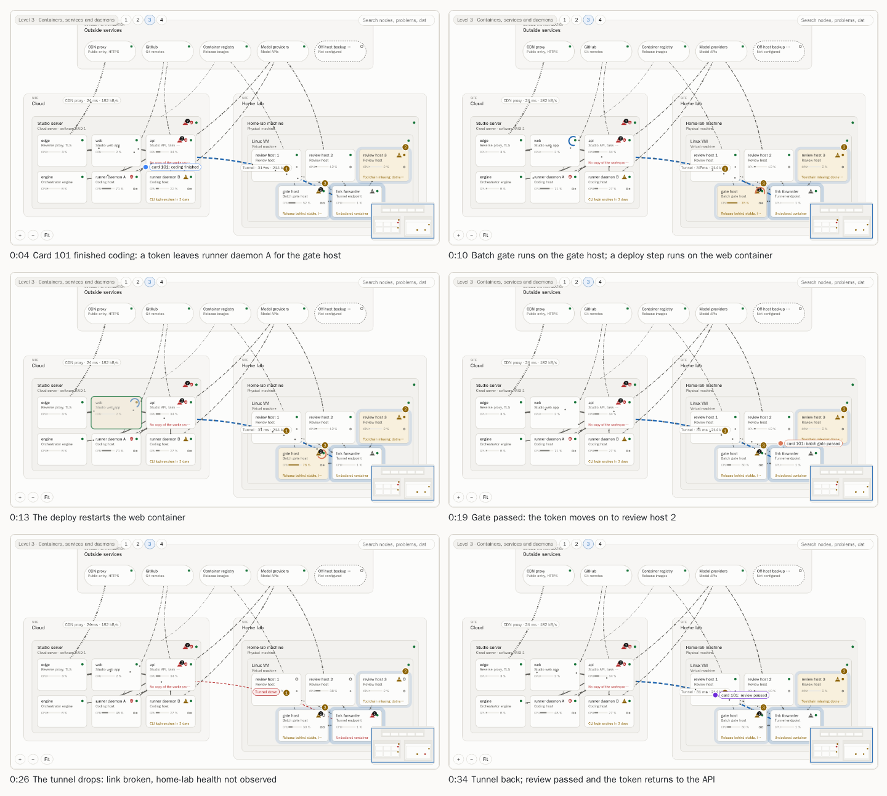

Concept Dossier · AGT-3955
Live structure canvas
One zoomable canvas for hosts, VMs, containers and links, with combinable layers for performance and network, storage, backup, construction sites, health, version and drift. Motion only where something happens; persona assessments on top of plain facts. This Dossier also decides the visual stack of the hosting area: one canvas renderer and one chart library, both lazy, both measured.
Summary
On 17 November 2026 the owner asked for a modern, dynamic, best-in-class view of hosts and containers on a canvas: zoom in, see many kinds of data in layers, see movement and live updates, have fun. The same evening: views and assessments may be made by LLM calls authored by personas, the system works toward goals such as backup, every place without a backup is visible, and construction sites belong in the system view.
This page holds what the owner decides: the alternatives, the recommendation, the evidence, 11 open decisions and 10 implementation slices. Four chapters carry the detail, and the live prototype can be tried. It builds on the deployment structure view (AGT-3349, AGT-3389), Bereitstellung, the persona team and the Nordstern. None of the sibling cards AGT-3879, AGT-3949, AGT-3950 and AGT-3954 is on develop, so the prototype uses the response shape this Dossier documents for AGT-3954; where that card chooses differently, its shape wins (Position).
 No off-host target
No off-host target
capture.mjs, 1440 px, only this layer on.Answers to the brief
| Asked | Answer | Detail |
|---|---|---|
| Best in class, stated | Seven kinds of leading topology maps studied. This view keeps the physical nesting, makes storage, backup and open problems layers, animates only causes and keeps a text outline. | Best in class |
| Canvas and semantic zoom | One infinite canvas with wheel, pinch, keyboard, minimap, fit and search to focus. Four levels open by on-screen size and cross-fade: sites, machines with VM nesting, containers, inside a service. | Semantic zoom |
| Layers | Seven combinable layers, each with data, encoding and legend: Performance and network, Storage, Backup, Construction sites and warnings, Health, Version, Drift. | Layers |
| Backup inventory, verified against the code | Every stateful location classified with its copies and recovery point. The git mirror covers only the committed part: five of six must-keep locations have no off-host copy. | Backup |
| Motion and live updates | Seven causes, each with one motion and a still equivalent. Deltas are batched to one visual update a second; a 44-second recording replays. | Motion |
| Playful, not noisy; 2D, 2.5D or 3D | Calm base, colour only for states and moving work, palette checked with the dataviz validator. 2D and 2.5D prototyped on one engine. | 2D and 2.5D |
| Renderer and chart library, measured | Three renderers on 500 nodes and 2,000 links, three chart libraries on one dashboard: chunk size, frames, idle CPU, memory, licence. | Renderer, charts |
| Performance budget | No growth of the initial bundle, lazy chunks with limits, no frame when idle or hidden, one update a second, animation off with reduced motion. | Budget |
| Data the structure endpoint does not deliver | Traffic and latency per link, volumes and growth, copies and recovery point, key escrow: source, API shape and cost of each. | Data |
| Facts and assessments apart, authored by personas, safe | The operations warden and the reliability engineer of the persona team return a schema-validated view specification; a generic renderer draws it; invalid or missing output falls back to facts. Author, time, model, confidence and facts used are shown. | Assessments |
| The system works toward goals | The persona proposes the next step until every must-keep location has a verified off-host copy; the canvas shows the progress. | Backup |
| Construction sites and warnings | Seven kinds of open problems from existing APIs, pinned to their node with what is wrong, what it blocks and the next step. | Warnings |
| Cost and freshness | About 5,000 input and 800 output tokens an assessment, 6 to 12 calls a day for two personas, about $0.15 a day; on change and every 12 hours. | Refresh and cost |
| Screenshots and recording | Each layer in light and dark at 1440 px and 390 px, the four levels, both views, the replay recorded and as stills. | Layers, Captures |
Alternatives
Canvas renderer
Three candidates suited to an animated, zoomable topology with nested groups drew the same synthetic scene of 500 nodes and 2,000 links under the same scripted pan and zoom. Medians of three runs on the task runner, which has no GPU:
| Candidate | Chunk, gzip | Pan and zoom, frames a second | Idle CPU | Flow CPU |
|---|---|---|---|---|
| A · Own Canvas 2D engine | 17.6 kB | 51 | 0.0 % | 33 % |
| A · same, semantic zoom on | 17.6 kB | 40 | 0.0 % | 11 % |
| B · PixiJS 8 (WebGL 2D) | 167.7 kB | 1 | 2.6 % | 117 % |
| C · Cytoscape.js 3 (compound graph) | 140.3 kB | 50 | 3.0 % | 64 % |
A, the prototype's own engine, has no dependency: nested layout, semantic zoom, link bundling, a cached static layer, particles and tokens, render on demand. B is a GPU scene graph without graph semantics; with WebGL in software it rendered below one frame a second here and would likely be the fastest on a real GPU. C brings compound nodes and a stylesheet but no particles: it animates by restyling every edge, which costs more than half a core. None exposes canvas content to assistive technology, so the outline and keyboard focus are ours in every case. B and C are MIT.
Dimension
2D is the most readable at every level and the cheapest. 2.5D isometric is playful and lets height carry a metric at levels 1 to 3, but labels float and hit areas shrink when zoomed in; it is one projection parameter of the same engine. 3D adds orbit controls, occlusion and 130.2 kB (three.js, gzip) for no fact that 2.5D cannot show.
Chart library for the hosting area
One dashboard of three charts, then twenty live updates:
| Library | Chunk, gzip | First render | Live update | Licence |
|---|---|---|---|---|
| uPlot 1 | 23.3 kB | 126 ms | 2.5 ms | MIT |
| Apache ECharts 6 | 186.1 kB | 581 ms | 57.6 ms | Apache-2.0 |
| Chart.js 4 | 61.5 kB | 261 ms | 13.6 ms | MIT |
uPlot draws time series, bands and bars and nothing else. ECharts has the broadest set of forms and an aria module at about eight times the chunk. Chart.js sits between. None has accessibility built in that replaces a table view.
How much the model composes
Facts only: deterministic and free, no judgement. Assessment on top of facts: the model adds callouts, emphasis, ranking, goals and a judgement; facts and layout stay deterministic. Model-composed view: the model also chooses grouping, order and default layers; most adaptive, hardest to compare from day to day.
Full tables, the measuring method and the reading of the numbers: Renderer, charts, data and budget.
Recommendation
Recommended default
Renderer: A, the own Canvas 2D engine, ported to a lazy Angular component. It meets the frame budget on CPU raster where the WebGL candidate cannot be measured, its particles and tokens stay cheap, and it costs 17.6 kB gzip instead of 140 to 170. If the first slice's re-run on real hardware misses 50 frames a second, PixiJS replaces the draw layer behind the same scene, layer and hook interfaces. Chart library: uPlot, lazy, for every time-series and bar chart of the hosting area (AGT-3950), with a table view; a form uPlot cannot draw becomes a small SVG component, not a second library.
2D by default with a 2.5D overview switch. Default layers Performance and network, Health, and Construction sites, remembered per user; missing backups always marked. Motion Lively, off with reduced motion. The canvas replaces the Structure view once it reaches parity. Backup target: SFTP to the home lab's storage, checked by the Backup layer through /api/operator/backups; the backup key and the secret store key escrowed apart. Assessments by the operations warden and the reliability engineer, on change and every 12 hours, on top of facts, never instead of them.
First slice: the canvas with machines and containers, semantic zoom and the Performance and network layer on live data (LSC-1). Every recommendation is the working decision until the owner records another option.
Evidence
bench/run.mjs, three runs each in headless Chromium in two raster modes; raw data in bench/results.json.
ObservedBackup inventory against the codeSecurityStorePathPolicy, KeyEncryptionKeySource, BackupCipher, BackupCheckouts and the workspace lifecycle.
ObservedToday's Structure viewCaptured from the prebuilt frontend with a role-named API fixture, light and dark.
ObservedPrototype within its budgetverify.mjs, 20 November 2026: 0 frames in 3 seconds idle; 0 frames in 3 seconds with the tab hidden; 53 deltas over the 45-second replay produced 12 visual updates.
ObservedLayers in light and dark28 captures of the seven layers at 1440 px and 390 px; palette checked with the dataviz validator.
ProposedPrototype and replaySynthetic recording modelled on the installation; real facts marked in src/model.js.
InferredCost of assessmentsToken counts estimated from the prototype's specifications and a facts digest.

capture.mjs during a replay at speed 1, light theme, 1440 px. The recording is assets/replay-recording.webm.Open decisions
Each decision has a recommended working option; it stands until the owner records another.
D1 · Canvas renderer
Which renderer draws the structure canvas, and every canvas of the Studio?
Meets the frame budget on CPU raster, cheapest particles and tokens, smallest chunk; PixiJS stays the measured fallback behind the same interfaces.
D2 · Chart library
Which single chart library draws the hosting area's charts (AGT-3950)?
Smallest chunk and fastest live update for time series and bars; other forms as small SVG components, not a second library.
D3 · 2D, 2.5D or 3D
Which projection does the canvas use?
2D reads best at every level; 2.5D is the playful overview on the same engine at little cost; 3D adds cost and no fact.
D4 · Default layers
Which layers are on when a user opens the canvas for the first time?
Answers 'is it live and is anything broken' at once; missing backups are marked in every combination anyway.
D5 · Motion level
How much moves by default?
The owner asked for movement; every motion has a cause, runs at most at 30 fps and stops when hidden.
D6 · Replace the Structure view
Does the canvas replace the current Structure view?
Two drawings of the same machines drift apart; parity first keeps every link working.
D7 · Backup target the Backup layer checks
Which off-host target should the backup job use and the Backup layer check against?
Off-host and off-site with no new account; supported by the backup feature; a bucket can follow as a second copy.
D8 · Key custody
Where are the backup key and the secret store key escrowed?
The restore runbook requires the keys apart from the backups and from each other; attestation lets the view show the date.
D9 · Roles that assess
Which personas assess the installation for the canvas?
Backup, credentials and escrow belong to the warden; hosts, links and capacity to the reliability engineer; both exist in the catalogue.
D10 · Refresh cadence
When do the personas reassess?
Fresh after a change, cheap otherwise: about $0.15 a day for two personas, within their weekly allowances.
D11 · How much the model composes
How much of the view may be LLM-composed?
Keeps facts deterministic and comparable while the persona says what matters and what to do next.
Implementation
The slices are in workbench.json in delivery order, each with its prompt and acceptance criteria. Facts and deltas are covered by AGT-3954, deploy records by AGT-3879, dashboard charts by AGT-3950. No product code is changed here.
| Slice | Delivers | After |
|---|---|---|
| LSC-1 Live structure canvas: machines, containers, semantic zoom, Performance and network layer | Lazy canvas with semantic zoom, minimap, search, keyboard and outline; Performance and network and Health layers on live structure data; budget and accessibility checks; GPU re-run of the renderer benchmark. | none |
| LSC-2 Traffic and latency per link | Per-link bytes per second and latency from existing reports and heartbeats, attached to structure links. | none |
| LSC-3 Live deltas, motion with causes and replay | Delta batching to one update a second, cause-bound animations, event log, replay of recorded deltas. | LSC-1 |
| LSC-4 Version and Drift layers; the canvas replaces the Structure view | Version and Drift layers, parity with the current Structure view, canvas becomes the default. | LSC-1 |
| LSC-5 Storage facts and Storage layer | Volumes, mounts and growth as facts; the Storage layer with pressure and days until full. | LSC-1 |
| LSC-6 Backup layer, escrow attestations and the backup goal | Backup coverage per data location, escrow attestations, copy links, goal progress, missing backup always visible. | LSC-1 |
| LSC-7 Construction sites and warnings layer | Every open problem pinned to its node with what it blocks and the next step. | LSC-1 |
| LSC-8 Persona view specifications for the structure canvas | Persona-authored, schema-validated, cached view specifications drawn on top of the facts. | LSC-6, LSC-7 |
| LSC-9 2.5D overview mode | Isometric overview mode on the same engine and data; block height by CPU and by mount size. | LSC-1, LSC-5 |
| LSC-10 Register the live structure canvas Dossier in the Nordstern map and add forward links | One entry in the Nordstern map and one forward link each in the deployment structure view and Bereitstellung Dossiers; no recorded decision changes. | none |